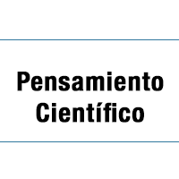
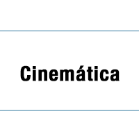
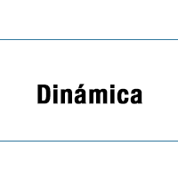
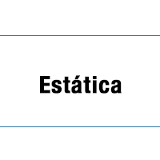
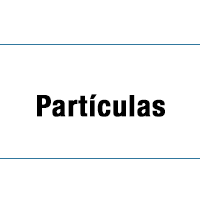
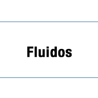
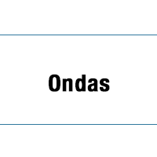

Los temas estan dispuestos por contenidos y desglosados en PDAs que son los que se trabajarán en este ciclo escolar:
- Pensamiento científico
- Unidades y medidas utilizados en Física.
- Estructura, propiedades y características de la materia.
- Estados de agregación de la materia.
- Interacciones en fenómenos relacionados con la fuerza y el movimiento.
- Principios de Pascal y de Arquímedes.
- Saberes y prácticas para el aprovechamiento de energías y la sustentabilidad.
- Interacciones de electricidad y magnetismo.
- Composición del Universo y el Sistema Solar.
- Fenómenos, procesos y factores asociados al cambio climático.
Por temas puedes consultar en los siguientes links:







Material adicional.
Lecturas recomendadas.
Seguimiento a evaluación.
Información para tutores.